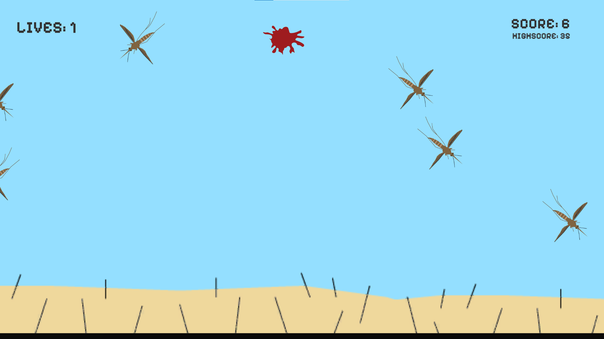

My fifth interactive drew on the concepts of microgames as well as old arcade shooter games like Galaga and Space Invaders. I used to play these arcade games and they were particularly brutal in that there is no end to them. I also tied in my hatred for mosquitoes since I am allergic to them. I created an arena for the mosquitoes to fly around in and six spawners that cycle through releasing bugs. The most difficult part of making this interactive was writing the AI that would control the mosquitoes. The script went through many iterations as I tried to figure out how best to have the mosquitoes act like mosquitoes and be threatening to the player, as well as how I would cycle through the sprites I made for the mosquitoes at different stages in the game. Some things about my final interactive that I wasn’t able to fix is how the mosquitoes fly backwards sometimes. This interactive effectively conveyed an irritating experience of getting attacked by mosquitos and some small satisfaction in being able to squash the evasive bugs. The game is good at being an effective microgame however it was possible to make the game a bit more complex through the use of different variants of mosquitos, such as tougher ones or faster ones which I didn’t do. The game does have scoring system and keeps track of the current high score but I could have also added a leaderboard to encourage some more competitive play.